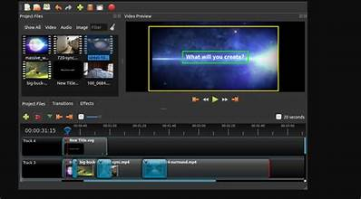
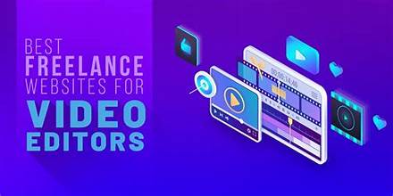
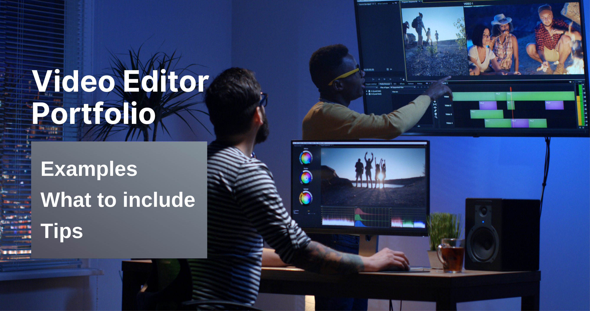
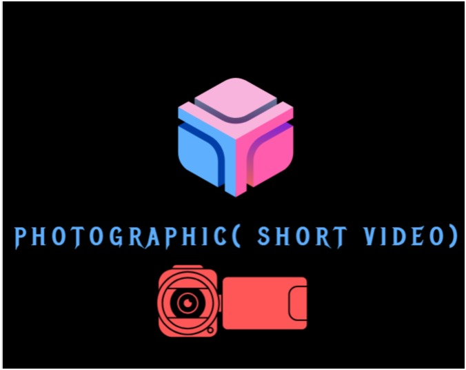

<html>
<head> <title> photographic( short video)</title>
</head>
<body bgcolor="#2D313F" text="white" align="center">
<video src="شرح تطبيق capcut  _ افضل تطبيق مونتاج مجاني!.mp4" controls style="width:600;height:600;padding:0 100 50 150">
</video> 
<hr color="red"  width="full" height="200"/>

<p align="middle" style="text-align:justify;color:white;font-style:italic;font-family:Arial Nova;font-size:20px;font-weight:bold"><h3>Dive into the World of Video Editing</h3>

Discover the transformative power of video editing in today's digital landscape. From subtle effects to storytelling mastery, delve into the significance of these skills, the diverse career paths they offer, and the enticing salaries they command.</p>
<pre  style="text-align:left;color:white;font-style:italic;font-family:Arial Nova;font-size:20px;font-weight:bold">
**Key Insights**

- Video editing merges creativity with technical prowess, using tools like Adobe Premiere Pro and Final Cut Pro for seamless projects.
- Trained video editors earn around $80,000 annually, with demand spanning industries like film, advertising, and content creation.
- Career options include Video Editors, Managers, and Motion Graphics Designers, blending creativity and technicality.
- Various learning methods exist, from in-person to online courses, with platforms like Noble Desktop providing comprehensive resources.

**Video Editing Overview**

Video editing involves crafting cohesive projects by manipulating and combining video files. Utilizing software 
like Adobe Premiere Pro, editors blend clips, correct sound, add effects, and maintain continuity to create compelling narratives.

**What Can You Do with Video Editing?**

Video editing allows for both subtle adjustments and significant transformations, 
from basic clip merging to advanced effects like chroma keying. 
These skills not only facilitate professional video production but also enhance personal content creation endeavors.

**How Do You Get Video Editing Tools? How Much Does it Cost?**

Software like Adobe Premiere Pro and Final Cut Pro are industry standards, available through subscription or one-time purchase.
 While free alternatives exist, they offer fewer features and resources.

**Benefits of Learning Video Editing**

Video editing is a crucial aspect of various industries, offering lucrative career opportunities and enabling creative expression.
 Aspiring content creators, businesses, and marketers can all benefit from mastering these skills.

**Video Editing Careers**

Video editing skills are in demand across diverse sectors, from film and advertising to government agencies and nonprofits.
 Roles like Video Editors, Managers, and Motion Graphics Designers offer dynamic opportunities 
 blending technical proficiency with creative vision.</pre>
</br>
<p>
 <a href="https://vimeo.com/features/video-editor?gclid=3d04e04339dc190aa63686053167f4cf&gclsrc=3p.ds&msclkid=3d04e04339dc190aa63686053167f4cf&utm_campaign=Core_Search_NA_EN_Bing_Buy_Generic_Evergreen_Hosting%2FSharing_Desktop&utm_content=Video+Editing&utm_medium=cpc&utm_source=bing&utm_term=video+editing
"> </a>

   <a href="https://streamlabs.com/podcast-editor?utm_source=bing&utm_medium=cpc&utm_term=video%20editing%20online&utm_campaign=%5BPr%3APod%5D%20%5BP%3AG%5D%20%5BC%3AS%5D%20%5BG%3AUS%5D%20%5BF%3ANull%5D%20%5BI%3ANull%5D%20%5BCo%3ANull%5D%20%5BD%3ANon-Brand%5D%20%5BA%3ANull%5D&utm_content=RSA&msclkid=13712088b90e19caa9d846ceb1b575de

">  </a><a href="https://technicalaide.com/best-free-video-editing-softwares-for-window-10
"> </a></p>
         <a href="file:///C:/Users/User/OneDrive/Documents/Desktop/nedal%20eyad%20alahmad/Consulting%20Services/Consulting%20Services%20.html"
       style="color:red;position:absolute;top:1900px;left:400px">
       
    </a>
 <hr color="RED" width="full" height="200"/>
  <a href="file:///C:/Users/User/OneDrive/Documents/Desktop/nedal%20eyad%20alahmad/home%20page/logo/nedal%20business.html" style="color:red;position:absolute;top:1810px;left:1300px">Back to home page</a>
  		

  
   
<a href="photographic( short video)/video/nedaleyadalamad079620.html></a>


</body>
</html>